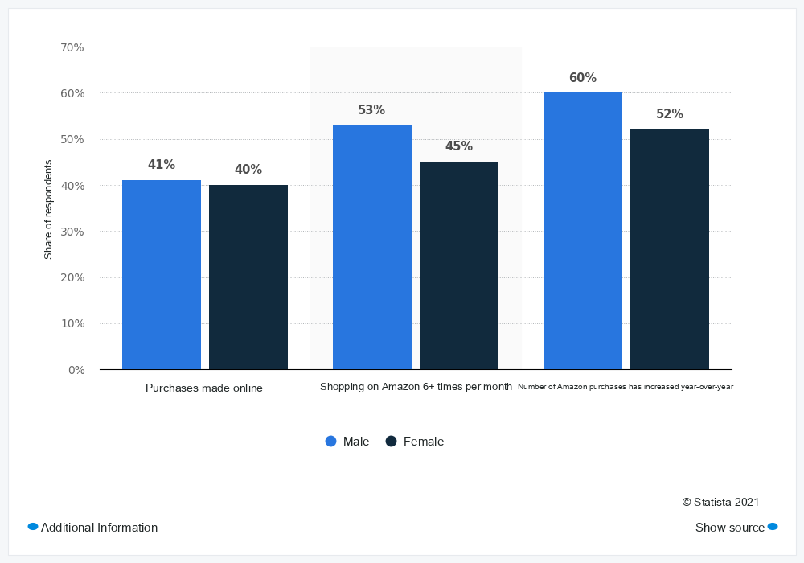

Charts + visual tables
From grouped bars and multi-series lines to heatmaps and diagrams. Tables distinguish simple, row-spanning, column-spanning and mixed-spanning structures.
Explore visual categories ↗MInfoVisQA: A Multilingual Benchmark for Information-Visual Question Answering
The same data. A different language. How well do multimodal models understand charts and tables when the visual and the question speak differently?
Parallel questions and visuals preserve the underlying quantities and structure, making language a deliberate part of the evaluation.
From grouped bars and multi-series lines to heatmaps and diagrams. Tables distinguish simple, row-spanning, column-spanning and mixed-spanning structures.
Explore visual categories ↗Evaluate each language with its own visual, question and answer. Then ask in Chinese or English about visuals in each of the other 23 languages.
Understand the protocol ↓Source-linked questions, localized labels, reproducible renderers and image hashes. Charts and tables enter the model as images, preserving the visual task.
See the pipeline ↗One shared evaluation framework.
XQA-ZH / EN: 23 cross-language settings each. LQA mean: mean of the 24 displayed same-language scores. AVG: macro-average of all 70 configurations.
Results JSON ↗All scores are supplied by the benchmark maintainer, including runs through additional APIs. The maintainer confirms the same scoring protocol: exact matching, followed by text-only GPT-6 Astra judging for non-matches. This website does not independently reproduce those evaluations.
Reported scores are preserved at one decimal. AVG comes from the supplied table; it is not the average of the 26 visible XQA/LQA columns. The overview’s LQA mean is computed from rounded published LQA values. Provider settings and endpoint versions may differ. Open weights describes model availability, not whether these runs were self-hosted; each open model links to its official model card. Closed means weights are not publicly released.
The supplied local results retain two inference failures for GPT-6 Astra, two for Gemini and three Judge errors for GPT-5.6-Luna, counted as incorrect. Failure counts and raw predictions for the five additional API runs have not been supplied. Incomplete GPT-5.5 results are excluded.
Explore actual localized examples from the released dataset. Switch the visual language and question setting to see what the model receives.

Released image · click to view at full resolution ↗Examples are copied without modification from the current release. Source attribution and original identifiers are retained; source-specific dataset terms apply.
For each base QA, the visual language changes while the task stays linked to the same source. Question and answer always share a language.
Visual language →
Each input contains a localized image and question. Original external prose, when required, is translated into the question language. Tables are never replaced by text transcriptions.
Exact answer matches are accepted. Other completed answers go to a text-only equivalence judge. The judge receives no image; unconfirmed equivalence counts as incorrect.
Each XQA column averages 23 visual languages. Each LQA column evaluates a single aligned language. AVG gives equal weight to all 70 configurations.
128 base questions × 70 configurations = 8,960 QA instances. Language variants share their base identity and are not independent source observations. Automated construction and review do not constitute complete human verification. See the dataset card for scope, quality flags and limitations.
Download the frozen benchmark, evaluate your model and share scores with the configuration needed to reproduce them.
Include the exact model identifier, dataset revision, inference settings, judge configuration, coverage and failure counts, plus all 70 configuration scores.
Submit results on GitHub Leaderboard maintenance guide ↗